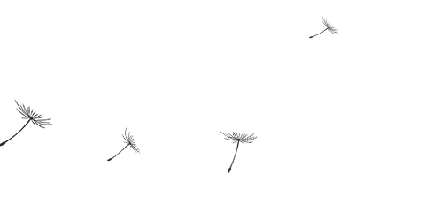
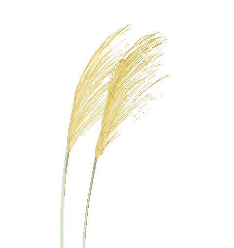
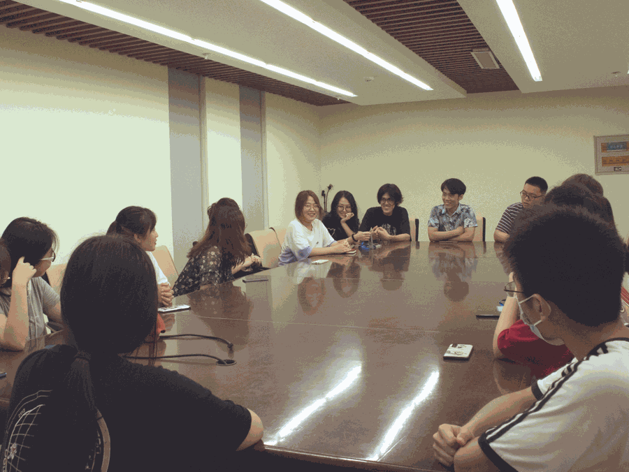
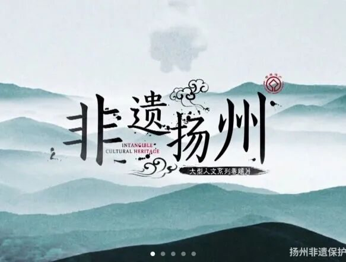
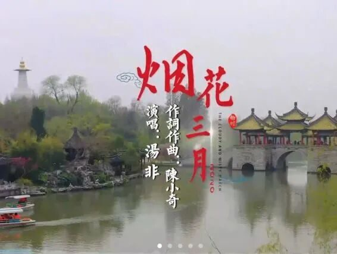
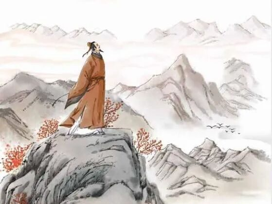

【徜扬恣肆·十六】挽一樽清月，待万程流光


挽一樽清月待万程流光
行者无疆
寓绻淮扬
千般荒凉，以此为梦；
万里蹀躞，以此为归。
GO STRAIGHT FORWARD
初识行者，是漫漫黄尘铺就的敦煌，是神秘瑰丽的莫高窟；
再识行者，已是烟柳画廊的淮扬，是书不尽的意气风骨。
NEVER BE THE END

YANGZHOU



从简单活泼的见面会到与带队老师的亲近交谈，扬州之旅渐渐地在我的脑子里有了大致的轮廓，许多新奇的思路也在发酵。从介绍成员的方式到途中的心路讲述，一切都有了雏形。
无奈突遇疫情，我们的行路也临时中止，但科技的便捷与团队成员的不懈努力终让我们成为了扬州最另类的行者。
NEVER BE THE END
YANGZHOU

扬州，积淀了两千五百年的历史文化，焕发出二十一世纪的现代文明。它从吴王夫差开挖的邗沟中向世人款款走来，携带着运河历史的变迁烙印，展示着长江时代的万种风情；无数双巧手变换，留下不朽的记忆与情感的宝贵遗产；扬州，有着多少人文自然风景？且莫说个园、何园、万花园……单那瘦西湖熙春台的古筝、平山堂栖灵塔的风铃，合奏的永不消逝的天籁之音，鼓噪的烟花三月的旅游风情，就让世人向往憧憬；扬州，你的热土洒上了多少文人异士的快意与怅惘？扬州八怪高谈阔论，出口成章，且莫说李白、杜牧、朱自清······
网络上高密度的知识输入让我们足不出户就能认识一个全面的扬州，但却也为我们远方的行路铺上了一段既定而又神秘的轨道。我们已然携手，以一个神奇的角度游览了秀美淮扬，只是不知何时能携着同一份热忱，踏上那片梦乡······
NEVER BE THE END
YANGZHOU
愿我们永远做远方的行路人。
来源 | 行者无疆实践团
文字 | 陈颖
编辑 | 杨静
审核 | 付媛 康艳虎